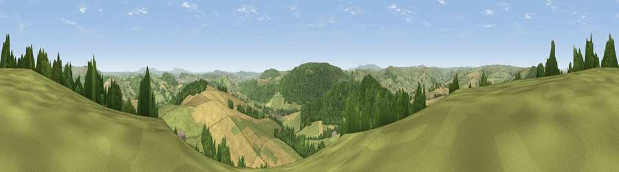

Viewpoint near Brockton
#2671 in England · top 7% of its area beats it · near BrocktonWhere it is
The exact computed spot (SO 32746 83681). Click the marker for map links.
The view, rendered

A 360° render of this exact spot computed from the terrain model, tree cover and land cover — summer colours, afternoon light, calibrated against photographs of famous viewpoints. Real trees, hedges and buildings will differ in detail.
The panorama
Grey silhouette: terrain skyline in each direction (720 bearings, Earth curvature and refraction included). Dashed green: skyline with trees (+15 m) and buildings (+8 m) as obstacles. Blue strip: how far the ground is visible on each bearing.
Where the view opens
Wedge length = distance to the farthest visible ground on that bearing (vegetation-aware). Rings at 10, 25 and 50 km.
What fills the view
38% grassland · 35% woodland · 27% cropland
Angular shares of the visible panorama (visual magnitude), not map area. Landscape diversity 0.48 (0–1 Shannon).
Key numbers
More beautiful places nearby
The staircase of upgrades: each row has a higher view potential than everything closer. Driving times are estimates from straight-line distance, calibrated against real road routing — check an actual route before setting out.
| Place | Direction | Drive | Score |
|---|---|---|---|
| Burrow | E · 5 km | ~12 min | 79.4 |
| Viewpoint near Asterton | NE · 8 km | ~17 min | 83.0 |
| The Lawley | NE · 22 km | ~36 min | 85.8 |
| Viewpoint near Little Wenlock | NE · 38 km | ~57 min | 86.6 |
| North Hill | SE · 58 km | ~80 min | 86.8 |
| Worcestershire Beacon | SE · 58 km | ~81 min | 87.1 |
| Viewpoint near Bossington | SSW · 141 km | ~164 min | 88.3 |
| Selworthy Beacon | SSW · 142 km | ~165 min | 88.7 |
52.44693, -2.99096 · source: osm viewpoint · position refined by local search. Computed location — check access rights before visiting.